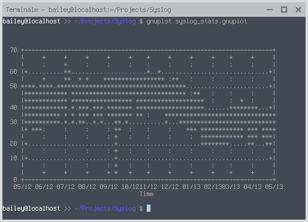

Gnuplot chart in ascii block
Tue 30 April 2013 by baileyGiven a simple 2 column text file as input file with the first column representing file size in bytes and the second column the timestamps in format Y-m-d.
24481664624 2010-10-17
49741909424 2010-10-18
50440904239 2010-10-19
51971254861 2010-10-20
51887934671 2010-10-21
48200114182 2010-10-22
27754927745 2010-10-23
24365406074 2010-10-24
47137848754 2010-10-25
46625748303 2010-10-26
Create a gnuplot command file with following contents:
set terminal dumb
set grid front
set nokey
set xdata time
set timefmt "%Y-%m-%d"
set xrange ["2012-05-01":"2013-05-01"]
set format x "%m/%y"
set ylabel "Volume (GB)"
set xlabel "Time"
set style fill solids
plot "syslog_stats.txt" using 2:($1/1073741824) w lines
Output chart appears in the active terminal as an ascii block
